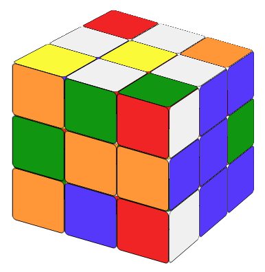
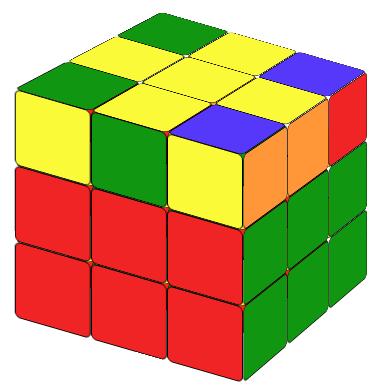
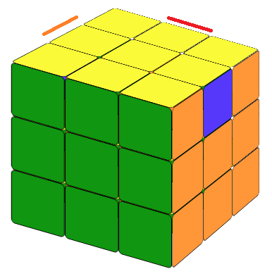
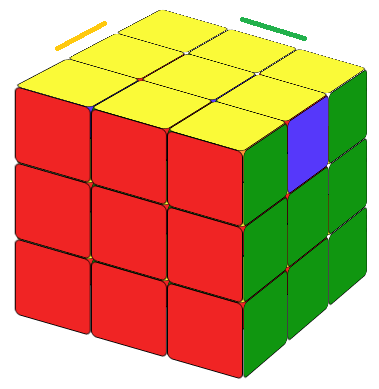
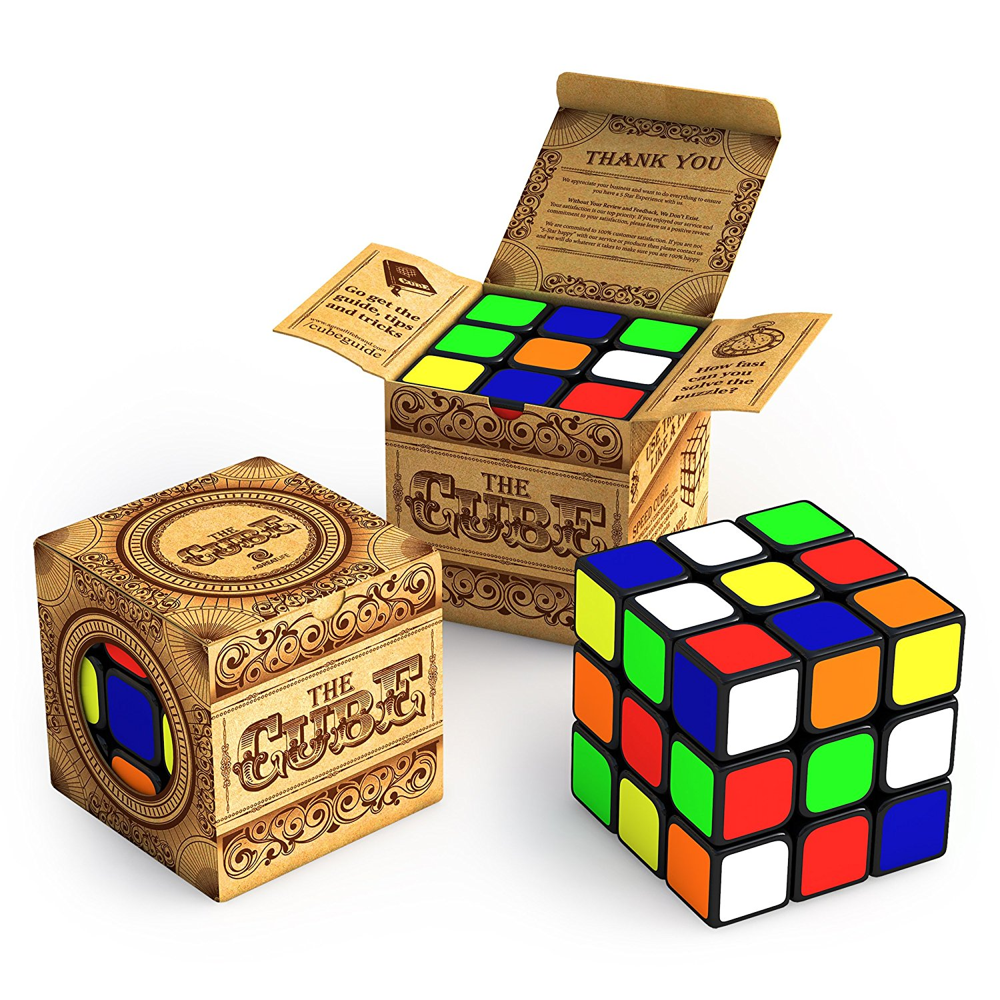

Here we will study how to solve a 3x3 Rubik's cube. There are many ways to do it. The method introduced here requires minimum memory work and is very intuitive. We solve it layer by layer, starting with the white layer. Of course we could begin with any color. Here we just follow the tradition. After we solve the white layer, we will set it as the bottom layer then solve the second layer; Then we will solve the top layer.

In this step, you try to make the top layer of the cube look like a littel flower (or cross) with a yellow center. Only the yellow center and the four edges around it matter. Other cubies do not matter. There is no formula for this step. Try and play with the cube. You will find a way.
In this step, we make the top layer look like a white cross with matching edegs on each side.
To do this, we maneuver the cube so that the edge and the center color match. Let's look at Fig 1.10.
On the right side, the white-blue edge and the blue center have matching colors (blue). We turn the right side 180 degree,
the white-blue edge will be on the bottom layer. (The center of the bottom layer must be white). On the front layer, the
white-green edge and the orange center do not have matching colors. We need to turn the top layer
(90 degrees or 180 degrees, counter clockwise or clockwise) so that the
white-green edge cubie sits on top of the green center piece, then we turn that layer 180 degree,
the white-green edge will be on the bottom layer too.
We do this for all 4 edegs. After that, turn the cube upside down, we will get the white cross image (Fig 1.10) .
It is easy. You can see it from the example here.
ExampleNow we need to fix the 4 corner pieces. They should be all white. But not only that. Let's look at Fig.1.30. The up color of the right-back corner cubie is white. But it's not the one we want. Why? Because the center piece of the right layer is green. Eventually every cubie should have green color on the right side. But the right-back corner piece on the right side is blue. It should be green. Match the green center piece on the right face (Fig 1.31). There is no formula in this step. At the end of this step, your cube should look like Fig 1.31 with top layer all white and the edegs have matching color to their corresponding center pieces. Try to play with the cube. You will find a way.


Now we rotate the cube 180 degrees so the white layer is on the bottom (Fig 1.32).
Now we want to solve the second layer (Fig 2.03). The center pieces of the second layer are already solved from step 1. We only need to make the edges of the second layer the same color as the center piece. Try to rotate the top layer of the cube, then we will encounter three cases:
(a) We need to move the up-front edge cubie (facing us) to the right-front edge position (Fig 2.01). In this case we could apply the following formula (Let's call it "To the Right"):
(b) A mirror image of situation (a) where we need to move the up-front edge cubie to the left-front edge position (Fig 2.02) (Let's call it "To the Left"):


Notice that the first step of the formula always moves the cubie farther away from the postion it wants to go.
(c) None of the above.
In this case, we just need to apply either of the formulas above once, to put a random piece to replace the edge which we need for case (a) and (b), then the cube will be in status (a) or (b), we then apply the formula accordingly. This step takes a bit more time as we have a few edegs to solve. You will use these formulas again and again and you will be able to memorise them in no time.
This step includes multiple small steps.
After step 2, the top yellow face will only have four situations: it has a yellow cross on the top, in which case we do not need to do anything; or it has a yellow center; or it has a shape looks like a 90 degree rotated L; or it has a horizontal yellow line on the top. Our first step is to make a yellow cross on the top. Like Fig 3.15.

Here we need remember a simple formula:
You can check the formula animation here. Let's call it "Fruit".
FruitThis formula will be used more than once. If it's only the center that's yellow, you will need to use the formula 3 times; If you have a 90 degree rotated L, you'll need to use the formula twice; if you have a line (make the line horizontal to you), you only need to use it once.


Notice that Fig 3.12 still counts as a 90 degree L. And if you get a vertical yellow line (Fig 3.13), you need to rotate the cube so it become a horizontal yellow line.


In this step we will make the colors on the up layer all yellow. As the yellow cross is already solved, we only need to consider the four corner pieces.
(a) If the yellow head corner piece on the up-layer belong to a up-back-left cubie (the yellow color on the back belongs to a up-back-right cubie) we call it a counter clockwise fish pattern.
(b) If the yellow head cubie on the up-layer belong to a up-back-right cubie (the yellow color on the back belongs to a up-back-left cubie) we call it clockwise fish pattern.





For the counter-clockwise fish pattern, try the
Counter-Clockwise Fish formula:
Notice that in the formula above, the top layer is always turning counter clockwise. That's why we call it counter-clockwise fish pattern.
For the clockwise fish pattern, try the
Clockwise Fish formula:
Notice that in the formula above, the top layer is always turning clockwise. That is why we call it clockwise fish pattern.
In this case, we will still use the two formulas above, but we need to use them more than once. To apply the formula, we will first maneuver the cube so that the up-left-back corner cubie has the wrong color.
If there are 2 cubies whose colors are not right, we maneuver the cube so that the color at the back of the left-back-up cubie is yellow; if there are 4 cubies whose colors are not right, we maneuver the cube so that the color at the left of the left-back-up cubie is yellow. (So "2 back 4 left") Then applying either the clockwise fish formula or the counter-clockwise fish formula, we will get the fish pattern.
Now that the up layer colors are all yellow (Fig 3.30), our next step is to correct the corner pieces' order.
Here we have two cases:
(a) There is a side whose two up corner pieces are showing the same color on one side of the cube (Fig 3.30, Fig 3.31).
(b) We could not find a side like in case (a).


This is the last step. We're almost there. After step3.3, the cube will only be in the following 4 situations.


For situation (a) (Fig 3.40) We want to move the three wrong cubies counter-clockwise. First we will make the side where all the colors are the same face us, use the counter-clockwise fish formula. Then we rotate the whole cube to the right, the cube will show a clockwise fish shape. We then use the clockwise fish formula, the whole cube will be solved.

counter-clockwise fish + rotate the whole cube to the right + clockwise fishFor situation (b) (Fig 3.41) We want to move the three wrong cubies clockwise. First we will make the side where all the colors are the same face us, use the clockwise fish formula. Then we rotate the whole cube to the left, the cube will show a counter-clockwise fish shape. We then use the counter-clockwise fish formula, the whole cube will be solved.

clockwise fish + rotate the whole cube to the left + counter-clockwise fishFor situation (c) (Fig 3.42) or situation (d) (Fig 3.43), you could use either formulas above once, then the cube will be in situation (a) or (b), then applying the corresponding formula, the cube is solved. Or you could save a lot of time by memorizing another two very simple formulas.
Now we're done! You have solved the Rubik's cube. Enjoy.
